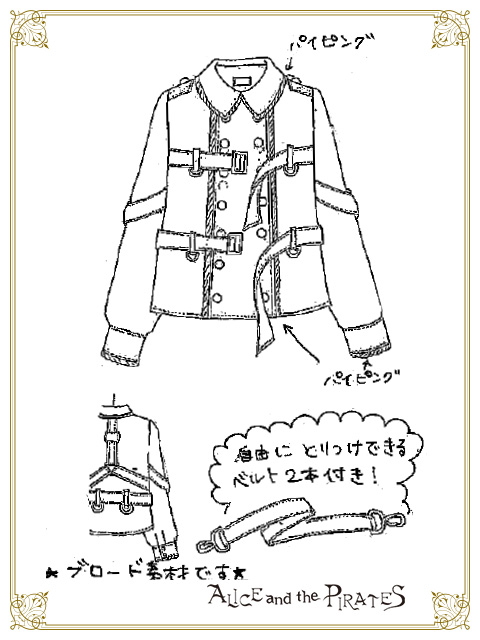
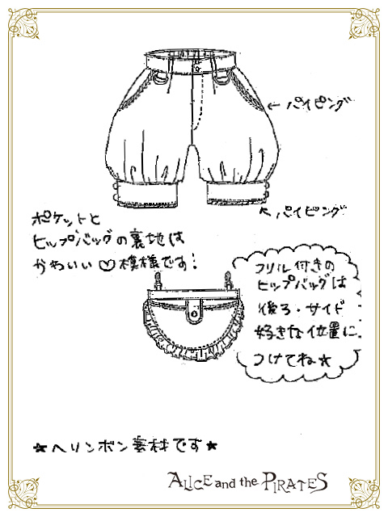

Context
In March of 2017 Baby The Stars Shine Bright released the series "Alice Wonder Car Chase" for their sister brand Alice And The Pirates. Its story is set inside a child's bedroom to which at night the toys come alive to race each other. The series debuts 5 dresses, a cutsew, and a skirt as well as several accessories and a tote bag.
Each set is designed around each character from the original storybook's cast, and Baby The Stars Shine Bright is no stranger to brand reimaginings of Alice In Wonderland. In this version, Cheshire Cat is a helicopter pilot.

